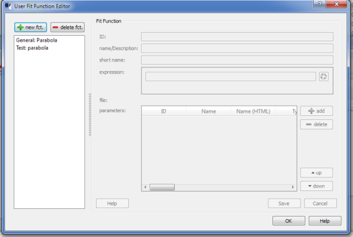
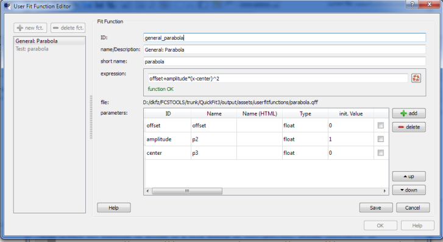
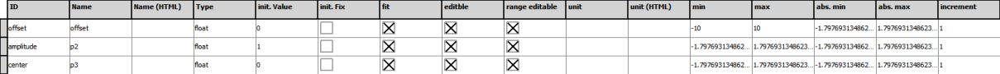

$$qf_commondoc_header.start$$ $$qf_commondoc_header.end$$
Introduction
In addition to the fit functions available as plugins (i.e. implemented in and
compiled from C++), it is possible to define simple fit functions by simply making
the expression known to QuickFit. These fit functions do not support all features
that are possible with compiled functions (e.g. currently you can not define additional plots
or calculated parameters), but the basic functionality of evaluating a function
$$math:f(x;\vec{p})$$ depending on one "running" variable $$math:x$$ and a vector/set
of parameters $$math:\vec{p}$$ is implemented.
Defining Fit Functions
User Fit Function Editor
A graphical editor is available in the Tools menu of QuickFit's main screen: Tools| edit user fit functions.
This editor allows to create user-defined fitting functions:
edit user fit functions.
This editor allows to create user-defined fitting functions:
- Start the editor by clicking Tools| edit user fit functions. A window, like the following will pop up:

The list on the left-hand side shows all currently available user fit functions.:
- A function can be deleted by clicking on the
 button.
button.
- A new function can be added by clicking on the
 button.
button.
- An existing function can be edited by double-clicking the function.
If a new function has been added, or an existing function is edited, the function parameters will be displayed on the rhs of the dialog. How they can be edited will be described in the next items.
- After adding or editing a fit function, the appearence of the dialog will change. Here is an example:

Each fit function has a set of general parameters:
- ID: an internal name for the fit function. This name should NOT contain whitespaces or special characters. Usually you should use simply lower-case letters and numbers and maybe the character
_.
$$note:This parameter is also used to identify the use-case of the fit function. For example, it does not make sense to use an FCS-fit function for fitting a cut through a laser focus/PSF. Therefore several QuickFit plugins will filter the available fit function using this ID. Generally, fit functions are selected by the prefix of the ID (e.g. a fit function fcs_mysupermodel would be an FCS fit function). Therefore you should look into the documentation of the plugin, your fit function is intended for, to see, which prefixes are selected. For general fits, such as in the table-plugin, all fit function may be used (i.e. no filtering). Here is a short table of possibilities:
- gen_XXX: General fit functions
- fcs_XXX: Fluorescence correlation spectroscopy fit functions
- fcs_tir_XXX: TIR Fluorescence correlation spectroscopy fit functions
- fcs_spim_XXX: SPIM Fluorescence correlation spectroscopy fit functions
- fccs_XXX: Fluorescence crosscorrelation spectroscopy fit functions
- fccs_tir_XXX: TIR Fluorescence crosscorrelation spectroscopy fit functions
- fccs_spim_XXX: SPIM Fluorescence crosscorrelation spectroscopy fit functions
- dls_XXX: Dynamic light scattering fit functions
- lightsheet_XXX: Fit functions for cuts through a light sheet
It is advisable to add a second prefix to the fit function name, which identifies yourself or your institute/group/cooperation, sich as fcs_dkfz_XXX, as this helps to further reduce double-namings, as you will only have to make sure, that you yourself didn't give the same name twice.$$
$$note:Also note, that the fit function name needs to be unique, so if you can't find you function in QF, you might want to change its ID.$$
In the example above, this is a general fit function with the name general_parabola
- Name/Description: A human readable description for the fit function. This name will be displayed in QuickFit's user interface. In the example above, the name is
General: Parabola
- short name: A shortened version of Name/Description for the fit function. This is strictly optional and is used instead of the long form at some places in QuickFit.
- category: A category for the fit function. This is strictly optional and is used to group fit functions by theor use-case.
- expression: Here you can enter the mathematical expression describing the desired fit model, as a function of the variable x (i.e. $$math:f(x, \vec{p})$$). QuickFit's internal expression parser is used to evaluate the expression and all functions and tools of this parser may be used. the only condition is, that the expression evaluates to a single number.
In the example above, the equation is a simple parabola:
offset+amplitude*(x-center)^2 or in mathematcial notation $$math:f(x;\underbrace{o,a,c}{=\vec{p}})=o+a\cdot (x-c)^2$$
As you can see, the expression depends on the variable x and a set of parameters (here: offset, amplitude, center, or $$math:o,a,c$$). These are the (free) fitting parameters, that are optimized during a fit. Their names are defined in the table below the expression (see next item).
You can open the online-help of the expression parser with a click on the button  next to the expression line edit. Below the edit, QuickFit displays, whether the syntax of the fit function is correct. If an error occured, the error is explained in red.
$$note:The expression parser will try to optimize the evaluation of this expression, when it is used. The simpler the expression is, the easier this optimization is and the faster the expression will evaluate. In any case the expression will evaluate significantly slower than a fit function, defined as plain C/C++-code in a plugin!$$
next to the expression line edit. Below the edit, QuickFit displays, whether the syntax of the fit function is correct. If an error occured, the error is explained in red.
$$note:The expression parser will try to optimize the evaluation of this expression, when it is used. The simpler the expression is, the easier this optimization is and the faster the expression will evaluate. In any case the expression will evaluate significantly slower than a fit function, defined as plain C/C++-code in a plugin!$$
- parameters: Here the fit function parametrers are described:

You need to add each fit parameter (of course except x) here, which is used by the expression. You can use the buttons on the rhs of the table to delete the currently selected parameter, add a new parameter or change the order of the parameters. Each parameter is represented in a single line and several properties can be set:
- ID: The name of the parameter (you may use letters, digits and '_' only for this name. Digits are not allowed as first character). You can access the parameter by this name in the expression (cf. last item). Note that this ID is used internally and you can give a user-readable name in the next two properties!
- Name/Name(HTML): A user-readable name for the parameter. This name will be displayed throughout QuickFit, rather than the ID. You can give two version: The first one is simply interpreted as plain text, whereas you can sue HTML-markup in the second version. An example is a fit parameter, methamtically denoted by $$math:\tau_D$$. For this parameter, the ID would e.g. be tau_d, the name tauD and the Name (HTML) τ<sub>D</sub>.
- Type: defines the type of widget, QuickFit should use to represent this parameter. :
- The default is float, which will display a simple number input widget.
- log. float, which will display a simple number input widget, optimized for numbers that span a large range of orders of magnitude.
- integer, which will only allow to enter integer numbers.
- integer combo, will display a drop-down box, where you can select an integer number.
- init. Value: initial value of the parameter
- init. Fix: determines, whether the fit parameter is initially fixed
- fit: determines whether the parameter is a fit parameter, or just a user-supplied number, which cannot be used as a fit parameter
- editable: determines whether the parameter is user-editable. This should ALWAYS be checked.
- range editable: determines whether the user will be allowed to change the range of this parameter
- unit/unit(HTML): (physical) units of the fit parameter, e.g. μs for a parameter, representing a time. Again a plain-text and a HTML-markupped version can be given.
- min ... max: determines the range of values for this parameter. If range editable was checked, the user might change this range. If an absolute range should be given, that the user cannot exceed, see next item.
- abs. min ... abs. max: This is the absolute value range for the parameter. The parameter will NEVER be out of this range, even if the user changes the parameter range above.
- increment: Some widgets allow to change the parameter with +/- buttons. This is the increment used for these buttons.
- preview: Here you can set a plot range and the axis-scaling for a preview plot of the function you entered. A click on update preview ... will open a new window (if none exists yet) with the fit function plot using the initial parameters.
- When you finished editing the fit function, you have to savethe changes, by clicking on the SAVE-button. A click on Cancel will discard all changes. $$note:The fit function list and all according widgets/buttons will stay disabled, until you hit Save or Cancel. The same goes or the button that closes the edtor window!$$
Fileformat for User Fit Functions
Each fit function is stored in a file ending on .qff, stored (initially) in
the directory $$configdir$$/userfitfunctions and $$assetsdir$$/userfitfunctions.
$$note:The directory where QuickFit searches for user-defined fit functions can be changed in the application settings dialog.$$
We will now create a fit function for $$math:f(x; o, A, X_0)=o+A\cdot(x-X_0)^2$$:
- In one of these directories, you will have to create a new text file for your fit function, e.g. parabola.qff.
- The file should have a contents like this:
[function]
id="general_parabola"
name="General: Parabola"
short_name="parabola"
expression="offset+amplitude*(x-center)^2"
param_count=3;
[parameter1]
id="offset"
name="offset"
label="offset"
unit=
unit_html=
init_value=0
init_fix=false
min=-10
max=10
[parameter2]
id="amplitude"
init_value=1
[parameter3]
id="center"
label="X<sub>0</sub>"
init_value=0
init_fix=false
- The basic parameters of the fit functions will be defined in the [function] block:
- (required): Each fit function needs a unique ID (here general_parabola), which is internally used to identify it. If two fit functions have the same ID, the last one to be read will be used. Also plugin fit functions superseed user-defined fit functions!
- Then you can give a human-readable name, here "General: Parabola"
- You can also give a shortened name, which is used in some places of QuickFit, but this is strictly optional.
- (required): The expression is noted behind expression using the syntax of QuickFit's expression parser.
$$note: You can use all possible expression, but the final result will be converted to a single number (e.g. the first vector element, or true -> 1, false -> 0. It is also possible to use more complex values, such as vectors inside the expression, but this might be much slower in evaluation. The highest speed, you will achieve when only operations and functions on simple numbers appear in the expression.$$
- (required): Finally you will have to define the number of parameters in $$math:\vec{p}$$ (here 3) as param_count
- Then you have to define the properties of each fit parameter. For each parameter, generate a section [parameterN], where N is a 1-based, increasing number. Here we have the sections [parameter1], [parameter2] and [parameter3]. In each section you can define these properties:
- (required): id: The internal parameter ID, e.g. offset for $$math:o$$, amplitude for $$math:A$$ and center for $$math:X_0$$.
- name: a human-readable name without markup
- label: a human-readable name, using HTML markup for formating, e.g. X<sub>0</sub>
- unit: a unit in which the parameter is measured (e.g. m^2/s)
- unit_html: a unit in which the parameter is measured, using HTML markup (e.g. m<sup>2</sup>/s)
- fit = (true|false): is this a fit parameter? (default: true)
- editable = (true|false): indicates whether the parameter is user-editable (default: true)
- init_value: initial value of the parameter (default: 0)
- init_fix = (true|false): indicates whether the parameter is initialy fixed (default: false)
- inc: increment for parameter input widgets (default: 1)
- min: lower end of the parameter's range (default: largest possible negative number). The user may be able to change this in some fit dialog!
- max: upper end of the parameter's range (default: largest possible positive number). The user may be able to change this in some fit dialog!
- abs_min: lower end of the absolute parameter's range (default: largest possible negative number). The use cannot change this!
- abs_max: upper end of the absolute parameter's range (default: largest possible positive number). The use cannot change this!
- type = (float|log|int_combo|int) type of the parameter input widget (float is a normal number input widget, log is a number input widget for logarithmic scaling, int_combo is a combobox which allows to select an integer and int is a spinbox, which allows to enter an integer)